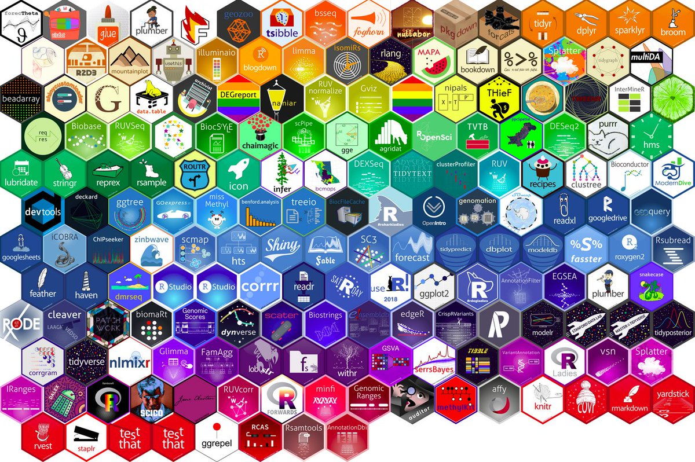

[1] 10[1] 5[1] 200[1] 2[1] 16King Mongkut’s University of Technology Thonburi
R is a programming language for statistical computing and data visualization.

Reference: https://en.wikipedia.org/wiki/R_%28programming_language%29
RStudio is an integrated development environment (IDE) that provides an interface by adding many convenient features and tools.

Reference: https://www.hertiecodingclub.com/learn/rstudio/install-r-studio/
At its simplest, R is like a car’s engine while RStudio is like a car’s dashboard.
Reference: https://moderndive.com/1-getting-started.html#r-rstudio
Install R by going to R download
Download and install RStudio at RStudio download
Packages are the heart of R.
Official R package is on the Comprehensive R Archive Network (CRAN)
You only need to install once on each computer or server.
Make sure to always load the library before using its functions.
[1] 15 2[1] 6 9Common types of data files
.csv: Comma-separated.txt: Plain text.xls or xlsx: Microsoft Excel SpreadsheetGo to this folder: Data
Save these in your working directory, then
Reference: https://posit.co/blog/introducing-dplyr/
magrittr package (install with tidyverse)is the same as
is the same as

Reference: https://www.rforecology.com/post/how-to-use-pipes/
library(dplyr)
library(tidyverse)
# Convert to data frame
starwars = starwars |>
select(name,height,mass,hair_color,skin_color,species)|>
as.data.frame()
starwars name height mass hair_color skin_color
1 Luke Skywalker 172 77.0 blond fair
2 C-3PO 167 75.0 <NA> gold
3 R2-D2 96 32.0 <NA> white, blue
4 Darth Vader 202 136.0 none white
5 Leia Organa 150 49.0 brown light
6 Owen Lars 178 120.0 brown, grey light
7 Beru Whitesun Lars 165 75.0 brown light
8 R5-D4 97 32.0 <NA> white, red
9 Biggs Darklighter 183 84.0 black light
10 Obi-Wan Kenobi 182 77.0 auburn, white fair
11 Anakin Skywalker 188 84.0 blond fair
12 Wilhuff Tarkin 180 NA auburn, grey fair
13 Chewbacca 228 112.0 brown unknown
14 Han Solo 180 80.0 brown fair
15 Greedo 173 74.0 <NA> green
16 Jabba Desilijic Tiure 175 1358.0 <NA> green-tan, brown
17 Wedge Antilles 170 77.0 brown fair
18 Jek Tono Porkins 180 110.0 brown fair
19 Yoda 66 17.0 white green
20 Palpatine 170 75.0 grey pale
21 Boba Fett 183 78.2 black fair
22 IG-88 200 140.0 none metal
23 Bossk 190 113.0 none green
24 Lando Calrissian 177 79.0 black dark
25 Lobot 175 79.0 none light
26 Ackbar 180 83.0 none brown mottle
27 Mon Mothma 150 NA auburn fair
28 Arvel Crynyd NA NA brown fair
29 Wicket Systri Warrick 88 20.0 brown brown
30 Nien Nunb 160 68.0 none grey
31 Qui-Gon Jinn 193 89.0 brown fair
32 Nute Gunray 191 90.0 none mottled green
33 Finis Valorum 170 NA blond fair
34 Padmé Amidala 185 45.0 brown light
35 Jar Jar Binks 196 66.0 none orange
36 Roos Tarpals 224 82.0 none grey
37 Rugor Nass 206 NA none green
38 Ric Olié 183 NA brown fair
39 Watto 137 NA black blue, grey
40 Sebulba 112 40.0 none grey, red
41 Quarsh Panaka 183 NA black dark
42 Shmi Skywalker 163 NA black fair
43 Darth Maul 175 80.0 none red
44 Bib Fortuna 180 NA none pale
45 Ayla Secura 178 55.0 none blue
46 Ratts Tyerel 79 15.0 none grey, blue
47 Dud Bolt 94 45.0 none blue, grey
48 Gasgano 122 NA none white, blue
49 Ben Quadinaros 163 65.0 none grey, green, yellow
50 Mace Windu 188 84.0 none dark
51 Ki-Adi-Mundi 198 82.0 white pale
52 Kit Fisto 196 87.0 none green
53 Eeth Koth 171 NA black brown
54 Adi Gallia 184 50.0 none dark
55 Saesee Tiin 188 NA none pale
56 Yarael Poof 264 NA none white
57 Plo Koon 188 80.0 none orange
58 Mas Amedda 196 NA none blue
59 Gregar Typho 185 85.0 black dark
60 Cordé 157 NA brown light
61 Cliegg Lars 183 NA brown fair
62 Poggle the Lesser 183 80.0 none green
63 Luminara Unduli 170 56.2 black yellow
64 Barriss Offee 166 50.0 black yellow
65 Dormé 165 NA brown light
66 Dooku 193 80.0 white fair
67 Bail Prestor Organa 191 NA black tan
68 Jango Fett 183 79.0 black tan
69 Zam Wesell 168 55.0 blonde fair, green, yellow
70 Dexter Jettster 198 102.0 none brown
71 Lama Su 229 88.0 none grey
72 Taun We 213 NA none grey
73 Jocasta Nu 167 NA white fair
74 R4-P17 96 NA none silver, red
75 Wat Tambor 193 48.0 none green, grey
76 San Hill 191 NA none grey
77 Shaak Ti 178 57.0 none red, blue, white
78 Grievous 216 159.0 none brown, white
79 Tarfful 234 136.0 brown brown
80 Raymus Antilles 188 79.0 brown light
81 Sly Moore 178 48.0 none pale
82 Tion Medon 206 80.0 none grey
83 Finn NA NA black dark
84 Rey NA NA brown light
85 Poe Dameron NA NA brown light
86 BB8 NA NA none none
87 Captain Phasma NA NA none none
species
1 Human
2 Droid
3 Droid
4 Human
5 Human
6 Human
7 Human
8 Droid
9 Human
10 Human
11 Human
12 Human
13 Wookiee
14 Human
15 Rodian
16 Hutt
17 Human
18 <NA>
19 Yoda's species
20 Human
21 Human
22 Droid
23 Trandoshan
24 Human
25 Human
26 Mon Calamari
27 Human
28 Human
29 Ewok
30 Sullustan
31 Human
32 Neimodian
33 Human
34 Human
35 Gungan
36 Gungan
37 Gungan
38 Human
39 Toydarian
40 Dug
41 Human
42 Human
43 Zabrak
44 Twi'lek
45 Twi'lek
46 Aleena
47 Vulptereen
48 Xexto
49 Toong
50 Human
51 Cerean
52 Nautolan
53 Zabrak
54 Tholothian
55 Iktotchi
56 Quermian
57 Kel Dor
58 Chagrian
59 <NA>
60 <NA>
61 Human
62 Geonosian
63 Mirialan
64 Mirialan
65 Human
66 Human
67 Human
68 Human
69 Clawdite
70 Besalisk
71 Kaminoan
72 Kaminoan
73 Human
74 Droid
75 Skakoan
76 Muun
77 Togruta
78 Kaleesh
79 Wookiee
80 Human
81 <NA>
82 Pau'an
83 Human
84 Human
85 Human
86 Droid
87 HumanThe best solution is… but one simple option is to DROP them.
is the same as
is the same as
summary()is the same as
name height mass hair_color
Length:51 Min. : 66.0 Min. : 15.00 Length:51
Class :character 1st Qu.:170.0 1st Qu.: 56.60 Class :character
Mode :character Median :183.0 Median : 79.00 Mode :character
Mean :177.2 Mean : 77.01
3rd Qu.:193.0 3rd Qu.: 84.00
Max. :234.0 Max. :159.00
skin_color species
Length:51 Length:51
Class :character Class :character
Mode :character Mode :character
summarise() mean(height)
1 177.1765 mean_Height
1 177.1765across() height_1 height_2 mass_1 mass_2
1 34.78546 177.1765 29.26981 77.00784group_by()# A tibble: 29 × 2
species `n()`
<chr> <int>
1 Aleena 1
2 Besalisk 1
3 Cerean 1
4 Clawdite 1
5 Droid 1
6 Dug 1
7 Ewok 1
8 Geonosian 1
9 Gungan 2
10 Human 20
# ℹ 19 more rowsselect() name species
1 Luke Skywalker Human
2 Darth Vader Human
3 Leia Organa Human
4 Owen Lars Human
5 Beru Whitesun Lars Human
6 Biggs Darklighter Human
7 Obi-Wan Kenobi Human
8 Anakin Skywalker Human
9 Chewbacca Wookiee
10 Han Solo Human
11 Wedge Antilles Human
12 Yoda Yoda's species
13 Palpatine Human
14 Boba Fett Human
15 IG-88 Droid
16 Bossk Trandoshan
17 Lando Calrissian Human
18 Lobot Human
19 Ackbar Mon Calamari
20 Wicket Systri Warrick Ewok
21 Nien Nunb Sullustan
22 Qui-Gon Jinn Human
23 Nute Gunray Neimodian
24 Padmé Amidala Human
25 Jar Jar Binks Gungan
26 Roos Tarpals Gungan
27 Sebulba Dug
28 Darth Maul Zabrak
29 Ayla Secura Twi'lek
30 Ratts Tyerel Aleena
31 Dud Bolt Vulptereen
32 Ben Quadinaros Toong
33 Mace Windu Human
34 Ki-Adi-Mundi Cerean
35 Kit Fisto Nautolan
36 Adi Gallia Tholothian
37 Plo Koon Kel Dor
38 Poggle the Lesser Geonosian
39 Luminara Unduli Mirialan
40 Barriss Offee Mirialan
41 Dooku Human
42 Jango Fett Human
43 Zam Wesell Clawdite
44 Dexter Jettster Besalisk
45 Lama Su Kaminoan
46 Wat Tambor Skakoan
47 Shaak Ti Togruta
48 Grievous Kaleesh
49 Tarfful Wookiee
50 Raymus Antilles Human
51 Tion Medon Pau'anfilter() name height mass hair_color skin_color species
1 Luke Skywalker 172 77.0 blond fair Human
2 Darth Vader 202 136.0 none white Human
3 Leia Organa 150 49.0 brown light Human
4 Owen Lars 178 120.0 brown, grey light Human
5 Beru Whitesun Lars 165 75.0 brown light Human
6 Biggs Darklighter 183 84.0 black light Human
7 Obi-Wan Kenobi 182 77.0 auburn, white fair Human
8 Anakin Skywalker 188 84.0 blond fair Human
9 Han Solo 180 80.0 brown fair Human
10 Wedge Antilles 170 77.0 brown fair Human
11 Palpatine 170 75.0 grey pale Human
12 Boba Fett 183 78.2 black fair Human
13 Lando Calrissian 177 79.0 black dark Human
14 Lobot 175 79.0 none light Human
15 Qui-Gon Jinn 193 89.0 brown fair Human
16 Padmé Amidala 185 45.0 brown light Human
17 Mace Windu 188 84.0 none dark Human
18 Dooku 193 80.0 white fair Human
19 Jango Fett 183 79.0 black tan Human
20 Raymus Antilles 188 79.0 brown light Human name species height
1 Darth Vader Human 202
2 Chewbacca Wookiee 228
3 Roos Tarpals Gungan 224
4 Lama Su Kaminoan 229
5 Grievous Kaleesh 216
6 Tarfful Wookiee 234
7 Tion Medon Pau'an 206arrange() name height mass species
1 Ratts Tyerel 79 15 Aleena
2 Yoda 66 17 Yoda's species
3 Wicket Systri Warrick 88 20 Ewok
4 Sebulba 112 40 Dug
5 Padmé Amidala 185 45 Human
6 Dud Bolt 94 45 Vulptereen name height mass species
1 Grievous 216 159 Kaleesh
2 IG-88 200 140 Droid
3 Darth Vader 202 136 Human
4 Tarfful 234 136 Wookiee
5 Owen Lars 178 120 Human
6 Bossk 190 113 TrandoshanWhat do you think will happen with the following code?
name height mass hair_color skin_color species
1 Leia Organa 150 49.0 brown light Human
2 Beru Whitesun Lars 165 75.0 brown light Human
3 Wedge Antilles 170 77.0 brown fair Human
4 Palpatine 170 75.0 grey pale Human
5 Luke Skywalker 172 77.0 blond fair Human
6 Lobot 175 79.0 none light Human
7 Lando Calrissian 177 79.0 black dark Human
8 Owen Lars 178 120.0 brown, grey light Human
9 Han Solo 180 80.0 brown fair Human
10 Obi-Wan Kenobi 182 77.0 auburn, white fair Human
11 Biggs Darklighter 183 84.0 black light Human
12 Boba Fett 183 78.2 black fair Human
13 Jango Fett 183 79.0 black tan Human
14 Padmé Amidala 185 45.0 brown light Human
15 Anakin Skywalker 188 84.0 blond fair Human
16 Mace Windu 188 84.0 none dark Human
17 Raymus Antilles 188 79.0 brown light Human
18 Qui-Gon Jinn 193 89.0 brown fair Human
19 Dooku 193 80.0 white fair Human
20 Darth Vader 202 136.0 none white Humanmutate() name species height mass BMI
1 Luke Skywalker Human 172 77.0 26.02758
2 Darth Vader Human 202 136.0 33.33007
3 Leia Organa Human 150 49.0 21.77778
4 Owen Lars Human 178 120.0 37.87401
5 Beru Whitesun Lars Human 165 75.0 27.54821
6 Biggs Darklighter Human 183 84.0 25.08286
7 Obi-Wan Kenobi Human 182 77.0 23.24598
8 Anakin Skywalker Human 188 84.0 23.76641
9 Chewbacca Wookiee 228 112.0 21.54509
10 Han Solo Human 180 80.0 24.69136
11 Wedge Antilles Human 170 77.0 26.64360
12 Yoda Yoda's species 66 17.0 39.02663
13 Palpatine Human 170 75.0 25.95156
14 Boba Fett Human 183 78.2 23.35095
15 IG-88 Droid 200 140.0 35.00000
16 Bossk Trandoshan 190 113.0 31.30194
17 Lando Calrissian Human 177 79.0 25.21625
18 Lobot Human 175 79.0 25.79592
19 Ackbar Mon Calamari 180 83.0 25.61728
20 Wicket Systri Warrick Ewok 88 20.0 25.82645
21 Nien Nunb Sullustan 160 68.0 26.56250
22 Qui-Gon Jinn Human 193 89.0 23.89326
23 Nute Gunray Neimodian 191 90.0 24.67038
24 Padmé Amidala Human 185 45.0 13.14828
25 Jar Jar Binks Gungan 196 66.0 17.18034
26 Roos Tarpals Gungan 224 82.0 16.34247
27 Sebulba Dug 112 40.0 31.88776
28 Darth Maul Zabrak 175 80.0 26.12245
29 Ayla Secura Twi'lek 178 55.0 17.35892
30 Ratts Tyerel Aleena 79 15.0 24.03461
31 Dud Bolt Vulptereen 94 45.0 50.92802
32 Ben Quadinaros Toong 163 65.0 24.46460
33 Mace Windu Human 188 84.0 23.76641
34 Ki-Adi-Mundi Cerean 198 82.0 20.91623
35 Kit Fisto Nautolan 196 87.0 22.64681
36 Adi Gallia Tholothian 184 50.0 14.76843
37 Plo Koon Kel Dor 188 80.0 22.63468
38 Poggle the Lesser Geonosian 183 80.0 23.88844
39 Luminara Unduli Mirialan 170 56.2 19.44637
40 Barriss Offee Mirialan 166 50.0 18.14487
41 Dooku Human 193 80.0 21.47709
42 Jango Fett Human 183 79.0 23.58984
43 Zam Wesell Clawdite 168 55.0 19.48696
44 Dexter Jettster Besalisk 198 102.0 26.01775
45 Lama Su Kaminoan 229 88.0 16.78076
46 Wat Tambor Skakoan 193 48.0 12.88625
47 Shaak Ti Togruta 178 57.0 17.99015
48 Grievous Kaleesh 216 159.0 34.07922
49 Tarfful Wookiee 234 136.0 24.83746
50 Raymus Antilles Human 188 79.0 22.35174
51 Tion Medon Pau'an 206 80.0 18.85192Error in `summarise()`:
ℹ In argument: `mean(BMI)`.
Caused by error:
! object 'BMI' not found mean(BMI)
1 24.50539 name BMI
1 Darth Vader 33.33007
2 Chewbacca 21.54509
3 Roos Tarpals 16.34247
4 Lama Su 16.78076
5 Grievous 34.07922
6 Tarfful 24.83746
7 Tion Medon 18.85192Scooby-Doo.csvSource: The data is from kaggle
head() name height mass hair_color skin_color species BMI
1 Luke Skywalker 172 77 blond fair Human 26.02758
2 Darth Vader 202 136 none white Human 33.33007
3 Leia Organa 150 49 brown light Human 21.77778is the same as
name height mass hair_color skin_color species BMI
1 Luke Skywalker 172 77 blond fair Human 26.02758
2 Darth Vader 202 136 none white Human 33.33007
3 Leia Organa 150 49 brown light Human 21.77778last() name height mass hair_color skin_color species BMI
49 Tarfful 234 136 brown brown Wookiee 24.83746
50 Raymus Antilles 188 79 brown light Human 22.35174
51 Tion Medon 206 80 none grey Pau'an 18.85192 name height mass hair_color skin_color species BMI
49 Tarfful 234 136 brown brown Wookiee 24.83746
50 Raymus Antilles 188 79 brown light Human 22.35174
51 Tion Medon 206 80 none grey Pau'an 18.85192top_n() name species height
1 Chewbacca Wookiee 228
2 Lama Su Kaminoan 229
3 Tarfful Wookiee 234 name species height
1 Yoda Yoda's species 66
2 Wicket Systri Warrick Ewok 88
3 Ratts Tyerel Aleena 79
Reference: https://www.raulthinks.com/posts/all-about-r-mutual-love/


Reference: https://shiny.posit.co/r/getstarted/shiny-basics/lesson1/index.html


Reference: https://rmarkdown.rstudio.com/lesson-13.html
R x TH